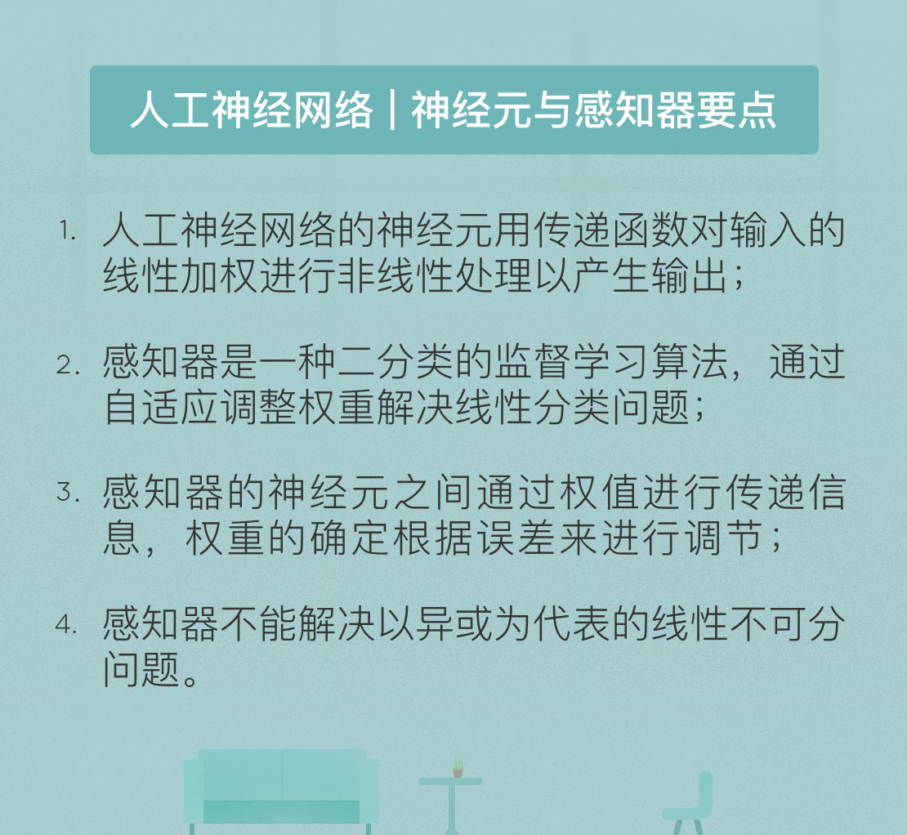

- 00 开篇词 人工智能：新时代的必修课.md
- 01 数学基础 九层之台，起于累土：线性代数.md
- 02 数学基础 月有阴晴圆缺，此事古难全：概率论.md
- 03 数学基础 窥一斑而知全豹：数理统计.md
- 04 数学基础 不畏浮云遮望眼：最优化方法.md
- 05 数学基础 万物皆数，信息亦然：信息论.md
- 06 数学基础 明日黄花迹难寻：形式逻辑.md
- 07 机器学习 数山有路，学海无涯：机器学习概论.md
- 08 机器学习 简约而不简单：线性回归.md
- 09 机器学习 大道至简：朴素贝叶斯方法.md
- 10 机器学习 衍化至繁：逻辑回归.md
- 11 机器学习 步步为营，有章可循：决策树.md
- 12 机器学习 穷则变，变则通：支持向量机.md
- 13 机器学习 三个臭皮匠，赛过诸葛亮：集成学习.md
- 14 机器学习 物以类聚，人以群分：聚类分析.md
- 15 机器学习 好钢用在刀刃上：降维学习.md
- 16 人工神经网络 道法自然，久藏玄冥：神经网络的生理学背景.md
- 17 人工神经网络 一个青年才俊的意外死亡：神经元与感知器.md
- 18 人工神经网络 左手信号，右手误差：多层感知器.md
- 19 人工神经网络 各人自扫门前雪：径向基函数神经网络.md
- 20 人工神经网络 看不见的手：自组织特征映射.md
- 21 人工神经网络 水无至清，人莫至察：模糊神经网络.md
- 22 深度学习 空山鸣响，静水流深：深度学习概述.md
- 23 深度学习 前方有路，未来可期：深度前馈网络.md
- 24 深度学习 小树不修不直溜：深度学习中的正则化.md
- 25 深度学习 玉不琢不成器：深度学习中的优化.md
- 26 深度学习 空竹里的秘密：自编码器.md
- 27 深度学习 困知勉行者勇：深度强化学习.md
- 28 深度学习框架下的神经网络 枯木逢春：深度信念网络.md
- 29 深度学习框架下的神经网络 见微知著：卷积神经网络.md
- 30 深度学习框架下的神经网络 昨日重现：循环神经网络.md
- 31 深度学习框架下的神经网络 左右互搏：生成式对抗网络.md
- 32 深度学习框架下的神经网络 三重门：长短期记忆网络.md
- 33 深度学习之外的人工智能 一图胜千言：概率图模型.md
- 34 深度学习之外的人工智能 乌合之众的逆袭：集群智能.md
- 35 深度学习之外的人工智能 授人以鱼不如授人以渔：迁移学习.md
- 36 深度学习之外的人工智能 滴水藏海：知识图谱.md
- 37 应用场景 你是我的眼：计算机视觉.md
- 38 应用场景 嘿, Siri：语音处理.md
- 39 应用场景 心有灵犀一点通：对话系统.md
- 40 应用场景 数字巴别塔：机器翻译.md
- 一键到达 人工神经网络复习课.md
- 一键到达 应用场景复习课.md
- 一键到达 数学基础复习课.md
- 一键到达 机器学习复习课.md
- 一键到达 深度学习之外的人工智能复习课.md
- 一键到达 深度学习复习课.md
- 一键到达 深度学习框架下的神经网络复习课.md
- 推荐阅读 我与人工智能的故事.md
- 新书 《裂变：秒懂人工智能的基础课》.md
- 直播回顾 机器学习必备的数学基础.md
- 第2季回归 这次我们来聊聊机器学习.md
- 结课 溯洄从之，道阻且长.md
- 课外谈 “人工智能基础课”之二三闲话.md
- （课外辅导）人工神经网络 拓展阅读参考书.md
- （课外辅导）数学基础 拓展阅读参考书.md
- （课外辅导）机器学习 拓展阅读参考书.md
- （课外辅导）深度学习 拓展阅读参考书.md
17 人工神经网络 一个青年才俊的意外死亡：神经元与感知器
1943年，美国芝加哥大学的神经科学家沃伦·麦卡洛克和他的助手沃尔特·皮茨发表了论文《神经活动中思想内在性的逻辑演算》（A Logical Calculus of Ideas Immanent in Nervous Activity），系统阐释了他们的想法：一个极度简化的机械大脑。麦卡洛克和皮茨首先将神经元的状态二值化，再通过复杂的方式衔接不同的神经元，从而实现对抽象信息的逻辑运算。正是这篇论文宣告了人工神经网络的呱呱坠地，它传奇的故事自此徐徐展开。
与生理学上的神经网络类似，麦卡洛克和皮茨的人工神经网络也由类似神经元的基本单元构成，这一基本单元以两位发明者的名字命名为“MP神经元（MP neuron）”。大脑中的神经元接受神经树突的兴奋性突触后电位和抑制性突触后电位，产生出沿其轴突传递的神经元的动作电位；MP神经元则接受一个或多个输入，并对输入的线性加权进行非线性处理以产生输出。假定MP神经元的输入信号是个\(N + 1\)维向量\((x_0, x_1, \\cdots, x_N)\)，第i个分量的权重为\(w_i\)，则其输出可以写成
\[ y = \\phi (\\sum\\limits_{i = 0}^N w_i x_i)\]
上式中的\(x_0\)通常被赋值为+1，也就使\(w_0\)变成固定的偏置输入\(b\)。
MP神经元中的函数\(\\phi (\\cdot)\)被称为传递函数，用于将加权后的输入转换为输出。传递函数通常被设计成连续且有界的非线性增函数，但在MP神经元中，麦卡洛克和皮茨将输入和输出都限定为二进制信号，使用的传递函数则是不连续的符号函数。符号函数以预先设定的阈值作为参数：当输入大于阈值时，符号函数输出1，反之则输出0。这样一来，MP神经元的工作形式就类似于数字电路中的逻辑门，能够实现类似“逻辑与”或者“逻辑或”的功能，因而又被称为“阈值逻辑单元”。
MP神经元虽然简单实用，但它缺乏一个在人工智能中举足轻重的特性，也就是学习机制。1949年，加拿大心理学家唐纳德·赫布提出了以其名字命名的“赫布理论”，其核心观点是学习的过程主要是通过神经元之间突触的形成和变化来实现的。通俗地说，两个神经细胞之间通过神经元进行的交流越多，它们之间的联系就会越来越强化，学习的效果也在联系不断强化的过程中逐渐产生。
从人工神经网络的角度来看，赫布理论的意义在于给出了改变模型神经元之间权重的准则。如果两个神经元同时被激活，它们的权重就应该增加；而如果它们分别被激活，两者之间的权重就应该降低。如果两个结点倾向于同时输出相同的结果，两者就应具有较强的正值权重；反过来，倾向于输出相反结果的结点之间则应具有较强的负值权重。
遗憾的是，赫布的学习机制并不适用于MP神经元，因为MP神经元中的权重\(w_i\)都是固定不变的，不能做出动态的调整。幸运的事，会学习的神经元模型并没有让人等待太久。1957年，任职于美国康奈尔大学航天实验室的心理学家弗兰克·罗森布拉特受到赫布理论的启发，提出了著名的“感知器（perceptron）”模型。
感知器并不是真实的器件，而是一种二分类的监督学习算法，能够决定由向量表示的输入是否属于某个特定类别。作为第一个用算法精确定义的神经网络，感知器由输入层和输出层组成。输入层负责接收外界信号，输出层是MP神经元，也就是阈值逻辑单元。每个输入信号（也就是特征）都以一定的权重被送入MP神经元中，MP神经元则利用符号将特征的线性组合映射为分类输出。
给定一个包含若干输入输出对应关系实例的训练集时，感知器引入了学习机制，能够通过权重的调整提升分类的效果，其具体的学习步骤为：
1.初始化权重\(\\mathbf{w}(0)\)和阈值，其中权重可以初始化为0或较小的随机数；
2.对训练集中的第\(j\)个样本，将其输入向量\(\\mathbf{x}_j\)送入已初始化的感知器，得到输出\(y_j(t)\)；
3.根据\(y_j(t)\)和样本\(j\)的给定输出结果\(d_j\)，按以下规则更新权重向量；
\[w_i(t + 1) = w_i(t) + \\eta \[d_j - y_j(t)\] \\cdot x_{j, i}\]
\( 0 \\le i \\le n\)
4.重复以上两个步骤，直到训练次数达到预设值。
式中的正常数\(0 < \\eta \\le 1\)被称为学习率参数，是修正误差的一个比例系数。
显然，第三步要对感知器的权重进行更新，是学习算法的核心步骤。这一步的作用在于评估不同输入对分类精确度的影响。如果分类结果和真实结果相同，则保持权重不变；如果不同，就需要具体情况具体分析：如果输出值应该为0但实际为1，就要减少\(\\mathbf{x}_j\)中输入值为1的分量的权重；如果输出值应该为1但实际为0，则要增加\(\\mathbf{x}_j\)中输入值为1的分量的权重。
感知器能够学习的前提是它具有收敛性。罗森布拉特证明了当输入数据线性可分时，感知器学习算法能够在有限次的迭代后收敛，并且得到的决策面是位于两类之间的超平面。本质上讲，在执行二分类问题时，感知器以所有误分类点到超平面的总距离作为损失函数，用随机梯度下降法不断使损失函数下降，直到得到正确的分类结果。
除了优良的收敛性能外，感知器还有很多优点。首先是非参数化特性，即没有做出任何关于固有分布形式的假设，只是通过不同分布重叠区域产生的误差来运行，这意味着即使输入数据是非高斯分布时，算法依然能够正常工作。其次是自适应性，只要给定训练数据集，算法就可以基于误差修正自适应地调整参数而无需人工介入，这无疑在MP神经元的基础上前进了一大步。
综上所述，作为神经网络的基础，感知器通过传递函数确定输出，神经元之间通过权重传递信息，权重的变化则根据误差来进行调节。由此，神经网络实现了最基础的学习过程，标志着人工神经网络开始蹒跚学步。
虽然感知器的形式简洁优雅，但它的应用范围也相当有限：只能解决线性分类问题。所谓线性分类意指所有的正例和负例可以通过高维空间中的一个超平面完全分开而不产生错误。如果一个圆形被分成一黑一白两个半圆，这就是个线性可分的问题；可如果是个太极图的话，单单一条直线就没法把黑色和白色完全区分开来了，这对应着线性不可分问题。
感知器对于线性不可分问题无能为力。如果训练数据集不是线性可分的，也就是正例不能通过超平面与负例分离，那么感知器就永远不可能将所有输入向量正确分类。在这种情况下，标准学习算法下不会产生“近似”的解决方案，而是出现振荡，导致算法完全失败。
批判感知器最有名的大字报就是所谓的“异或”问题。异或操作是一种两输入的逻辑操作：当两个输入不同时，输出为真；而当两个输入相同时，输出为假。异或操作可以放在包含四个象限的平面直角坐标系下观察：在第一象限和第三象限中，横坐标和纵坐标的符号相同；而在第二象限和第四象限中，横坐标和纵坐标的符号相反。这样一来，一三象限上的两个点(1, 1)和(-1, -1)就可以归为一类，二四象限上的两个点(-1, 1)和(1, -1)则可以归为另一类。划分这四个点就是一个二分类问题。
这个问题不是一个线性分类问题，因为找不到任何一条直线能将将正方形中两组对角线上的顶点分为一类。1969年，新科图灵奖得主马文·明斯基和他的麻省理工学院同侪塞默尔·帕波特合著了《感知器：计算几何简介》（Perceptrons: An Introduction to Computational Geometry）一书，系统论证了感知器模型的两个关键问题。第一，单层感知器无法解决以异或为代表的线性不可分问题；第二，受硬件水平的限制，当时的计算机无法完成训练感知器所需要的超大的计算量。
明斯基的著作对感知器无疑是致命的打击。异或问题是最简单的逻辑问题之一，如果连异或的分类都无法解决，这样的模型存在的意义就颇为有限了。于是，政界对神经网络的热情被这一盆冷水浇了个透心凉，这直接导致了科研经费的断崖式下跌；而学界则视人工神经网络研究为洪水猛兽，避之不及。连接主义学派的第一波凛冬就此到来。
只是在学术争鸣背后，明斯基的所作所为更藏着些文人相轻的意味。罗森布拉特其人性格张扬，于区区34岁的年纪提出感知器模型后更加受人追捧，俨然一副学术网红的模样。更重要的是，大量来自政府的经费都涌向罗森布拉特的项目，也许这才是让明斯基不爽的真正原因。此外，明斯基和罗森布拉特求学路上的交集也暗示着两人之间的纠葛冰冻三尺，绝非一日之寒。
感知器的问题给了明斯基釜底抽薪的契机。在1969年版《感知器》中，明斯基不仅论证了感知器在科学上的局限，更夹带了不少对罗森布拉特进行人身攻击的私货。罗森布拉特对感知器在符号处理方面的局限心知肚明，但他万万没想到这些缺陷会被明斯基以如此敌意而致命的方式呈现出来。1971年，罗森布拉特在43岁生日当天划船时意外淹死，至于这究竟是意外事故还是以死明志，恐怕只有他自己知道了。
今天我和你分享了神经网络的鼻祖感知器的基本原理，其要点如下：
- 人工神经网络的神经元用传递函数对输入的线性加权进行非线性处理以产生输出；
- 感知器是一种二分类的监督学习算法，通过自适应调整权重解决线性分类问题；
- 感知器的神经元之间通过权重传递信息，权重的变化根据误差来进行调节；
- 感知器不能解决以异或为代表的线性不可分问题。
虽然存在缺陷，但感知器依然是人工神经网络研究史上里程碑式的模型，那么如何才能让它跨过异或问题这座大山呢？
欢迎发表你的观点。

© 2019 - 2023 Liangliang Lee. Powered by gin and hexo-theme-book.